Lovett


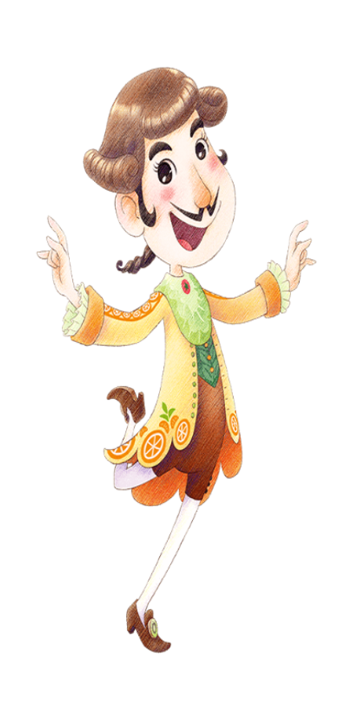
"Un bon vivant que siempre está a la caza de platos raros y deliciosos. Escribe columnas especiales sobre gastronomía en revistas sobre todos los platos que ha probado y tiene seguidores en todo el mundo".
Lovett es un personaje de Story of Seasons: Pioneers of Olive Town.
Es un aristócrata gourmet que viaja por todo el mundo probando comida. Su mente siempre está pensando en comida, sin importar la hora del día. Va del bistró, la cafetería y su casa todos los días.
Si el jugador visita la casa de Lovett, tendrá una lista de platos que está buscando. Si el jugador completa estas solicitudes, Lovett lo recompensará con una amplia variedad de artículos.
Cumpleaños | 07 de Otoño |
|---|---|
| Familia | En otra ciudad |
Horario |
Miércoles a Lunes | Lovett empezará su día en la Palacio Gourmet de 06:30 - 09:45, para luego dirigirse al Posada de la Gaviota (1F) de 11:00 - 16:00, para luego dirigirse al Restaurante El Cabo de 16:45 - 19:00 y finalmente se quedara por el resto del día en la Palacio Gourmet llegando a las 19:45. |
|---|---|---|
| Martes | Lovett empezará su día en la Palacio Gourmet de 06:30 - 10:45, para luego dirigirse al Restaurante El Cabo de 11:30 - 14:00, para luego dirigirse al Tienda de comestible de 14:30 - 16:30, para luego dirigirse al Restaurante El Cabo de 17:00 - 19:00 y finalmente se quedara por el resto del día en la Palacio Gourmet llegando a las 19:45. | |
Cualquier día
   |
Lovett estara todo el día en la Palacio Gourmet. | |
Nota: Puede conocer mejor sobre los lugares disponibles que hay en el juego y lo puede consultar en la sección de lugares. | ||
Preferencias de regalo
La mejor forma de mejorar la amistad y el afecto con los aldeanos o candidatos a matrimonio es siempre regalarles las cosas que le gusta una vez por día, aqui se mustra los regalos que puedes darle a este personaje.
|
😍
Fasina
|
 Acquapazza 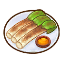 AcquaCalçots  Ensaladacaprese  Champiñonesa la Plancha  Pez caimána la plancha Onigiri  TartaSacher |
|---|---|
|
🙂
Encanta
|
 Bhindimasala  Pulsera ala moda  Nabo daikoncon patas  Aguacategigante  Puerrogigante  Boniatogigante  Tomategigante  Nabogigante  Manzanadorada  Col chinadorada  Melocotóndorado  Fresadorada  Fletán alcartoccio  Espinacacorazón  Melónjoya 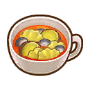 Minestrone  Maízmosaico 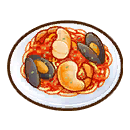 Pescatore  Ramoarcoíris 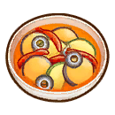 Fletán alRatatouille  Berenjenaredonda  Relojbrillante  Patataestrella  Zumode tomate |
|
😐
Gusta
|
 Galletas dealmendra  Zumode manzana  Manzanaasada  Judíasal horno  Batidode plátano  Ensaladade judías  Tarta SelvaNegra  Vals de lasllamas  Pescadohervido  Patatasdulces  Verdurashervidas  Boo pahtpong karee  Boqueronesen vinagre 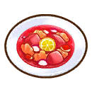 Borsch 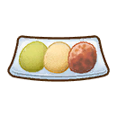 Botamochi 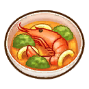 Bullabesa  Perfume deramo  Caldo deverduras 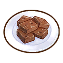 Brownies  Leche debúfala +  Cafémoca  Boniatoscaramelizados  Pasta a lacarbonara 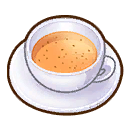 Chai  Coloniaencantadora  Fonduede queso  Tarta dequeso  Monaka decastañas  Arroz concastañas  Gambasal chili  Tarta dechocolate  Galletas dechocolate  Magdalenacon chocolate  Chukasoba  Crema demarisco  Grano decacao  Zumode coco  Flande café  Galletas de  Pasta ensalsa blanca  Arroz concurry  Conciertode la tierra  Huevo +  Ensaladade huevo  Sándwichde huevo  Curry dequingombó  Perfumefloral 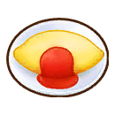 Tortilla  Huevofrito  Escalopede atún  Fruit au lait  Compotade frutas  Perfumefrutal  Ensaladade fruta  Tarta defruta  Pasta a lagenovesa  Pizza demarisco gigante  Leche decabra +  Zumode uva 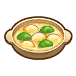 Caldo deGratinado  Potajeverde  Pescado ala plancha  Té dehierbas  Zumo de limóncon miel  Cacaocon miel  Cafécon miel  Flande miel  Yogurcon miel  Boniatoscon miel  Sopaagripicante  Lechecaliente 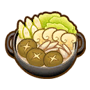 Caldo  Tostadainjeolmi  Sándwichde mermelada  Medallónenjoyado  Anilloenjoyado 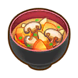 Kenchin-jiru  Khaoniaomamuang 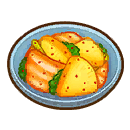 Kimchi  Caldo dekimchi  Kinpiragobo  Kitsuneudon 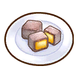 Lamington  Sopa delimón  Patataslionesas  Cangrejo de ríoen salsa mala  Zumode mango  Magdalenacon sirope  Sushi depez espada  Arroz conhongo pino  Leche +  Troncoquimera  Maderaquimera  Arroz consetas  Ensaladamixta  Sopamixta  Mont Blanc  Nocturno deluz de luna  Daifuku deartemisa  Rollitos decol y setas  Setasmarinadas  Pastelde setas  Pastanapolitana  Magdalenacon nueces  Sopa depez remo  Sopa dequingombó Tortilla  Sopa decebolla  Zumode naranja 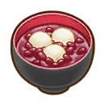 Oshiruko  Tortitas 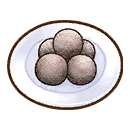 Panellets  Pannacotta  Pasta depeperoncino  Pizza  Pot au feu  Flan 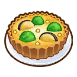 Quiche  Risi e bisi Bol desashimi Sashimi debesugo  Cataplanade marisco  Arroz pilafcon marisco  Sopa demarisco  Tarta defresas  Tostada degamba  Huevo deseda +  Pescaditomarinado  Sopa deajo  Sopa decereza agria  Marcha deprimavera Estofado  Daifukude fresa  Batido defresa 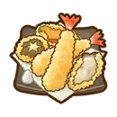 Tempura  Tiramisu  Tom yumgoong  Tom yum pla  Sopa detortilla 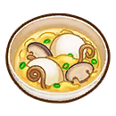 Tteokguk  Sándwichde atún  Bol deanguilas  Zumode verduras  Pizza deverduras  Ensaladavegetal  Sándwichvegetal  Salteado deverduras  Rondó floresde invierno  Potajeamarillo  Bebida deyogur  Yum woonsen |
| Nota: Todos los regalos que no estan aquí son considerados neutrales para el personaje. | |
Eventos del personaje
Cada evento que ocurra el jugador podrá conecer más sobre el personaje, algunos eventos son partes de la historia del juego y otras son eventos extras que puedes hacer.